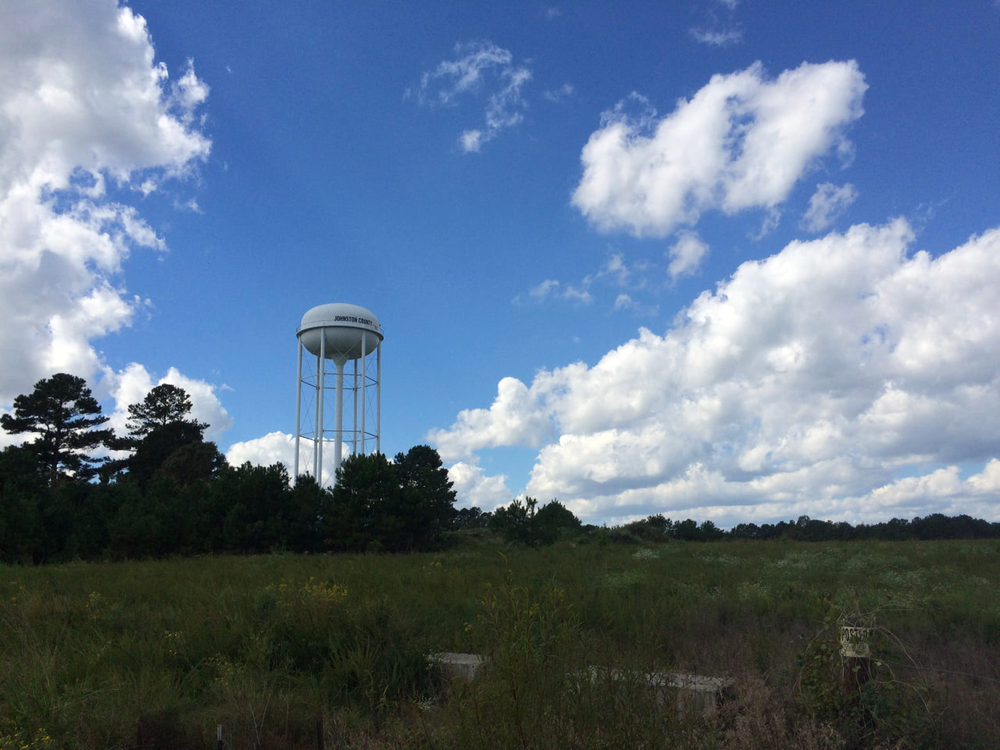

Day 4: Clayton — Dunn
Oct 4, 2014 • 40 miles
What goes up must come down, except for the roads in Four Oaks, NC. Those only go up.
I ended up walking a lot of today, maybe a third of the distance. Right at the start, I was facing an uphill on the shoulder of US 70 Business, staring into the morning sun. Fortunately, I could cut through the strip mall parking lots that ran along the side, and walk on the shoulder when they ended.
I had to walk the forever-long Booker Dairy bridge over the Neuse river (again) because its pavement was grooved. It was another reminder that this route is meant for cyclists, whose wheels are big enough that grooves don’t matter.
And the final 15 miles or so were into gale-force headwinds. Anything less than a moderate downhill was a waste of energy to skate. In these situations, cyclists can drop to a lower gear to conserve energy, and to me that means walking. I don’t mind it though, it feels like a rest for my knees and calves.
Almost all of today’s route was on roads. The only bike trail began as a loop around a middle school’s athletic fields, and I came up on two middle schoolers putting the green in greenway, if you know what I mean. One of them gave me a thumbs up. Still got it!
I thought country roads would be easy and safe because no one takes them. In reality, they’re dangerous because no one takes them. The few cars and trucks that do, fly through them. Every day on this trip brings a new scary thing, and today’s was a big pickup truck doing 60–70 a few feet to the left.
Around 1:45pm with 10 or so miles to go, I stopped for lunch at Kelly’s — the definition of “hole in the wall” — in Benson. And I’m glad I did. Mr. Kelly himself was tending bar, and there was one customer nursing a can of Coke when I walked in. I asked if the kitchen was still open and Mr. Kelly replied, “it hasn’t opened yet. I don’t turn anything on until my first order. Electricity is expensive.” The quickest thing he said he could turn out was a pizza, so that’s what I ordered. I listened to him talk to his customer and a second one that walked in as it cooked. You get the impression that only friends of Mr. Kelly stop in at his bar. He brought the pizza out, watched me eat a slice, and asked how it was. “Usually I heat up a Tombstone but they jacked up the price of those at Wal-Mart, so that one there’s a Red Baron.” Gourmet.
Somewhere before my final stop, I hit 100 miles total! And I finally got out of the 919. It’s really happening now.